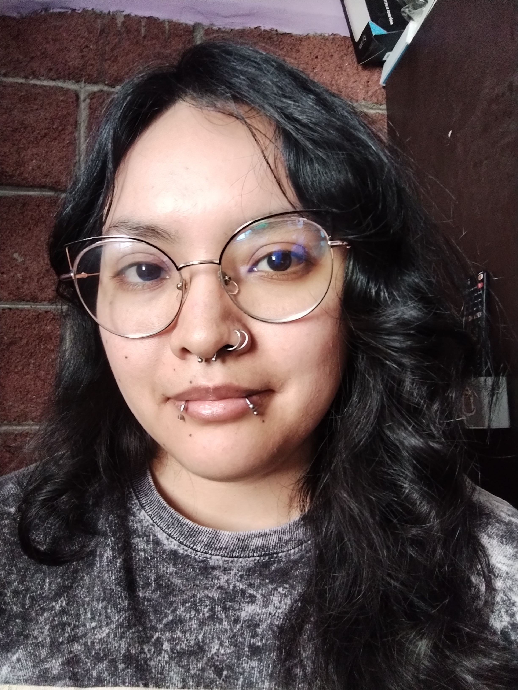
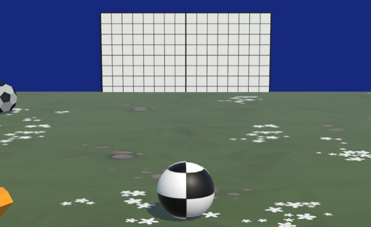
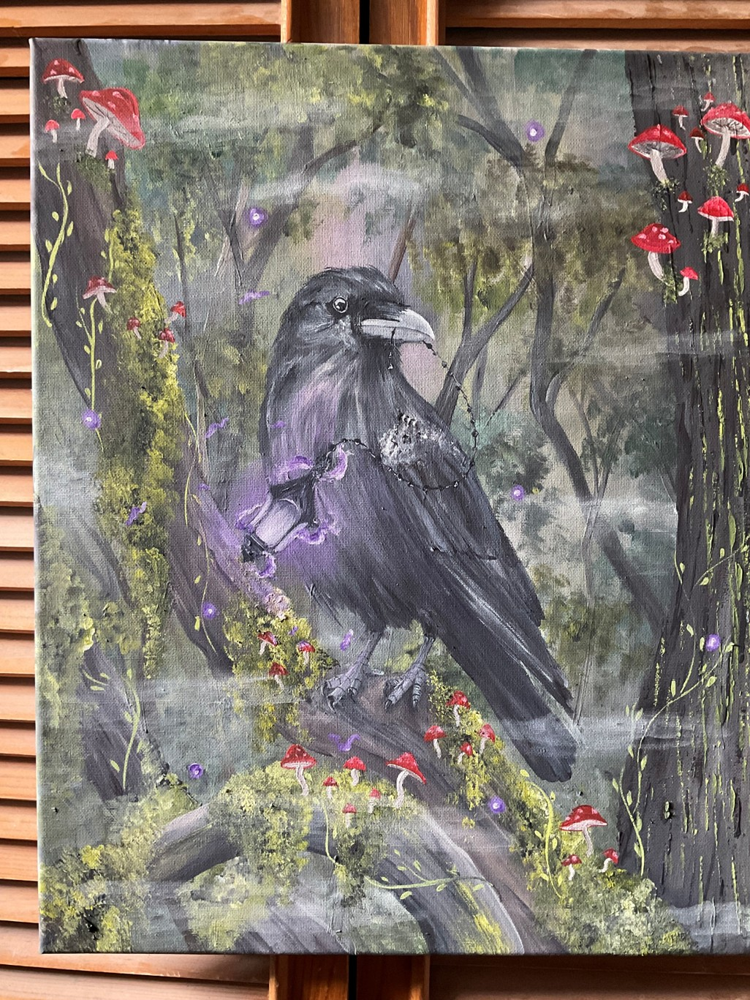
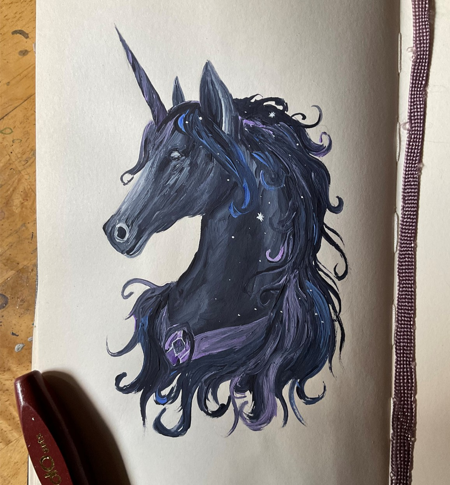

✧ Shaders Labs
Experimentos visuales con materiales, efectos y shaders personalizados.
Unity · Shaders¡Bienvenido a mi pequeño universo! Explora mis proyectos de videojuegos, experimentos gráficos e ilustraciones.
Explorar proyectos ↗
Soy estudiante de Desarrollo de Videojuegos. Me apasiona combinar la programación, el diseño visual y el arte para crear experiencias interactivas con personalidad.
Actualmente exploro herramientas como Unity, Godot y Unreal Engine, además de experimentar con shaders, simulación física e ilustración tradicional.
Ideas que cobran vida línea por línea.
Experimentos visuales con materiales, efectos y shaders personalizados.
Unity · ShadersMovimiento, colisiones y experimentos interactivos en un entorno 3D.
Godot · Física 3DPrototipos de videojuegos, mecánicas y nuevas ideas por explorar.
Game Development
Jugar en itch.io ↗Un espacio para criaturas, personajes, mundos fantásticos e ilustraciones originales, todo elaborado de manera tradicional.

Personajes y mundos imaginarios.

Magia, criaturas y conceptos visuales.

Exploraciones de color y composición.
¿Te gustaría colaborar en un proyecto, conocer mi trabajo o compartir alguna idea? ¡Me encantará conectar contigo!
ruinsandforest@gmail.com